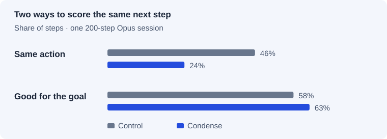
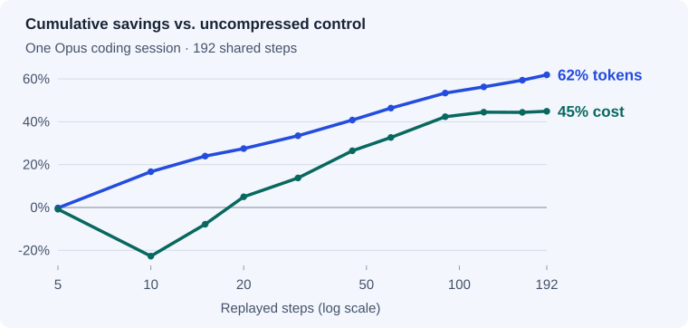

dense
denseDoes the agent still finish the task?
A cost replay holds the conversation fixed. These tests let the agent choose its next action or run a full Terminal-Bench task against a verifier.
What the task verifier found
Opus 4.8 ran 14 long Terminal-Bench tasks under each configuration. A task-specific verifier checked the final state. Vanilla Claude Code had repeat trials, which gives it a different denominator.
| Strategy | Successful trials | Solve rate | 95% interval |
|---|---|---|---|
| Vanilla Claude Code | 23 / 34 | 68% | 51–81% |
| Condense | 11 / 14 | 79% | 52–92% |
| Headroom | 10 / 14 | 71% | 45–88% |
The trial counts and intervals leave room for meaningful differences in either direction. Headroom ran token mode with retrieval for this quality test.
What the next-step scores measure
At each recorded step, the model proposed its next action. One score counted exact matches to the recording. A second score asked a judge whether the action would help reach the goal. A different command can still be a good next move.

| Metric | Control | Condense |
|---|---|---|
| Exact action match | 46% | 24% |
| Action judged useful | 58% | 63% |
| Average context | 260k tokens | 99k tokens |
| Model cost | $33.61 | $18.53 |
Both arms followed one recorded 200-step trace, with 192 steps available in both. Even the uncompressed control matched only 46% of recorded actions. Its 58% useful-action score fell below the study’s calibration target, so the five-point judge difference cannot establish a quality improvement.
When does compression pay for itself?

The first ten steps cost $1.06 for the control and $1.30 for Condense. Cumulative cost crossed over around step 20. At 192 matched steps the totals were $33.61 and $18.53, with 20.7 seconds per step in both arms. Redundant reads increased from 14 to 17.
What happens when the agent chooses its whole trajectory?
A separate 14-task report compared 56 Condense trials with 70 vanilla trials, weighting each task equally. Condense cost 27.9% more per trial (reported interval +8% to +53%). The solve-rate change was −1.4 percentage points (−17 to +14). A fixed replay cannot capture extra work an agent chooses to do.
Published quality study and scoring rubric · Verifier and trial methodology